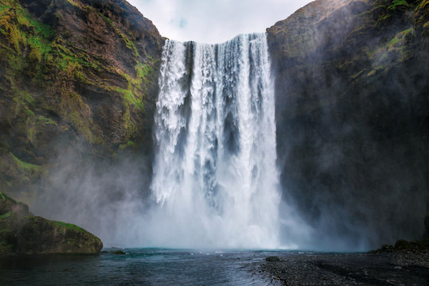

Umuhimu wa milima na vilima
Maumbo mbalimbali ya sura ya nchi ni muhimu katika maisha ya binadamu. Mara nyingi, milima, na vilima huwa ni vyanzo vizuri vya maji. Maji hayo hutumiwa na binadamu na viumbe wengine kwa matumizi mbalimbali. Pia, milima husababisha aina mojawapo ya mvua. Vilevile, milima na vilima ni sehemu za vivutio vya utalii. Watalii hupanda milimani na vilimani kuona misitu, maporomoko ya maji na viumbe mbalimbali wa porini. Aidha, watu hujipatia kipato kutokana na shughuli za utalii. Kielelezo namba 5 kinaonesha maporomoko ya maji kutoka kwenye vilima.

Pia, katika miteremko ya milima, kuna misitu minene yenye wanyama ambao ni vivutio vya utalii. Vilevile,